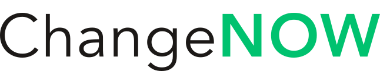
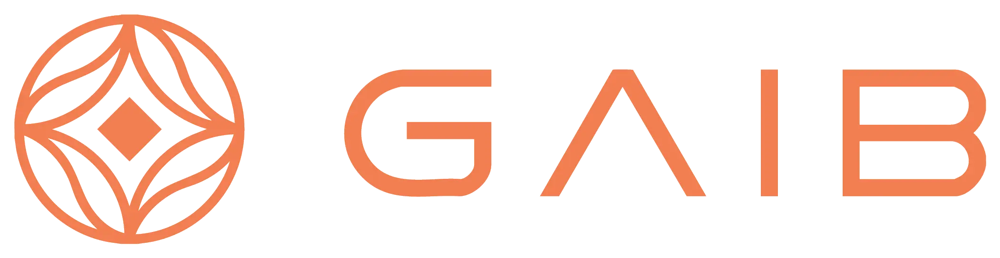

Trust Oracle · Activity Markets · Wallet Intelligence
Trust Oracle for Onchain Finance
ZeruAI turns wallet behavior into trust signals that decide who gets credit, who gets access, and who gets to mine a market.
When identity is optional, behavior is the trust primitive that scales.
Ecosystem


Why it matters
Every economy relies on trust
When identity is optional, behavior becomes the trust primitive.
The category
What is a trust oracle?
Price oracle
Tells applications what an asset is worth
Trust oracle
Tells applications how a wallet behaved and what it implies
ZeruAI converts longitudinal behavioral, transactional and risk data into signals applications can act on, across markets, screening, credit and access.
How it works
From wallet behavior to economic decisions
Ingest
Multichain wallet activity across EVM ecosystems: trading, liquidity, lending, incentives, governance.
Normalize
Raw transactions are decoded into comparable behavior across chains and protocols.
Model
Neural networks find the patterns: contribution quality, risk, reliability.
Score
zScore and domain-specific signals for incentives, credit, and compliance.
Act
Scores rank today’s miners in an Activity Market, and answer live API calls for screening, credit, and allocation.
Behavior ⟶ Trust signal ⟶ Economic decision
Ingestion
z(f, ℓ) = L[ℓ] ∑j=1k ai fi
(Weighted aggregation of behavioral features across protocols)Feature Construction
MAX f(D, ℓ, n) = ℓ · sil_score(D, ℓ) + n
(Optimization of feature salience across behavioral clusters)Modeling
MINφ (1/N) ∑i=1N (ẑφ(xi) − z̃i)²
(Minimizing prediction error across the wallet dataset)Output
si = σ(wᵀfi) ∈ [0, 1]
(Final score as a bounded value between 0 and 1)The platform
One Trust Oracle. Two Product Surfaces. One Network Asset.
-
The network asset
$ZERU
Coordinates Activity Markets and access across the ZeruAI ecosystem.
-
Wallet intelligence
Enterprise APIs
Screening, credit and access signals for financial applications.
-
Consumer markets
Zaps
The market layer where an economy turns its activity into a speculative market.
-
The trust primitive
zScore
Behavioral trust score for wallets.
Products
Built on the trust oracle
Zaps
Activity Markets
Pump lets a creator launch a market. Virtuals lets a project launch one. Zaps lets an economy launch one. Real activity on a chain decides who brings that market’s supply to the table.
- Real chain activity decides who mines, every day
- Miners earn when the market buys, never free inventory to dump
- zTOKEN supply: no team, no VC, no free miner allocation. Unsold supply burns.
Enterprise APIs
Wallet intelligence on demand
Wallet-level trust signals built from behavior across DeFi, served by API and wired straight into the decisions that move capital.
- Wallet screening
- Smarter airdrops and incentives
- Behavioral credit signals
Inside Zaps
Activity Market flow
Activity
Miner Rights
Issuance
Liquidity
Market
Activity decides who can mine. Demand decides how much exists.
Proof in production
Trust signals already in production
Enterprise
GAIB
Enterprise APIsAirdrop and incentive quality analysis. V1 → V2 airdrop optimisation.
Citrea
Enterprise APIsEcosystem allocation intelligence
Unlloo
Enterprise APIsCredit underwriting signals
Bion
Enterprise APIsBorrower behavior intelligence
Upscale
Enterprise APIsWallet intelligence integration
ChangeNOW
Enterprise APIsUser segmentation at scale
Activity Markets / Zaps
Aspen
ZapsActivity Markets
Published analyses
ZAPs: A Reward Attribution Framework for DeFi Ecosystems
The research framework behind ZeruAI’s behavioral scoring and sybil-defense methodology.
of airdrop leakage preventable
EigenLayer · 11,176 wallets analysed 686KETHFI saveable with zScore filtering
Ether.fi · 10,015 wallets analysed 73%reduction in same-day leakage
Optimism · 11,024 wallets analysedThe road ahead
From trust oracle to the trust layer of tokenized finance
Trust oracle live
zScore, explorer integrations, scoring APIs
Zaps Reputation Network
Leaderboards · clans · campaigns · contributor graph
Activity Markets
zBASE · first economy-created market
Tokenized finance & AI agents
Stablecoin risk, RWAs, agent reputation
As stablecoins, real-world assets, and AI-agent wallets move onchain, behavioral trust becomes the scarce input. ZeruAI is building its default infrastructure.
Research
Published on arXiv
The models behind zScore and Zaps, written up in full.
zLend: A Dual-Scope Cash-Flow Reconstruction Framework for On-Chain Credit Underwriting
Rebuilds a wallet’s daily balances from raw transfers to judge whether it can repay a loan.
Read the paperZAPs: A Reward Attribution Framework for DeFi Ecosystems
The framework behind Zaps. Scores economic contribution and filters sybils in four layers.
Read the paperDeep Reputation Scoring in DeFi: zScore-Based Wallet Ranking
A deep residual network that scores Uniswap v3 liquidity providers and swappers.
Read the paperzScore: A Universal Decentralised Reputation System for the Blockchain Economy
The founding paper. Onchain reputation from wallet behavior, tested on lending data.
Read the paperDispatches
Latest from the blog
Product releases, research, and market notes, as they ship.
zETH, the first Activity Market: how the launch works
zETH launches through a five-day, block-by-block USDC auction after verified Ethereum activity burns its initial supply. Registered Miners can bid in the first 24 hours to qualify for rewards.
ReadCrypto Structuring Myth: What Sanctioned Wallets Really Do
A comparison of sanctioned wallets with 2,576 ordinary ones debunks crypto “structuring”: equal splits were no more common, while rapid, all-at-once transfers stood out.
ReadWhy “Fair” Reward Curves Pay You to Split Your Wallet
A three-day Base trading sample shows a “fair” square-root reward curve turning 0.27% of trading volume into 9.32% of rewards, paying wallets to split funds into smaller pieces.
ReadBuild on the trust layer
Whether you are launching a market, underwriting wallets, or screening counterparties, ZeruAI gives you the trust signals to decide better.